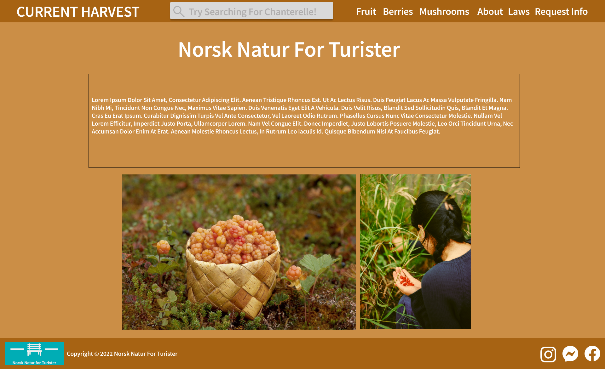
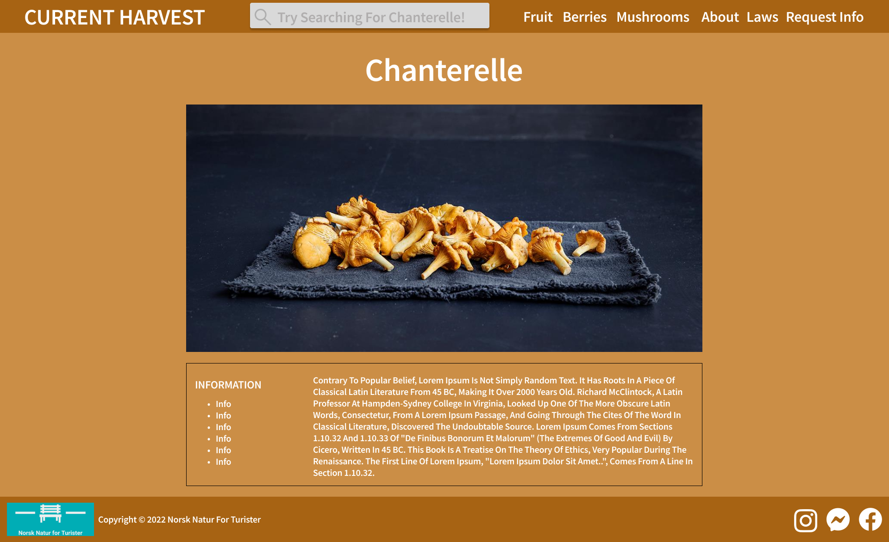

Brage, Caroline, Christer, Karl Emil, Karl og Vebjørn
10.10.22
2. Administrative Details
Client name: Norsk Natur for Turister
Website name: currentharvest.no
Contact person: Ola Nordmann
3. Purpose, goals, and audience
The purpose of the website is to endorse safe harvest of in-season wild berries, fruit and mushrooms. Thus, the website will attempt to make harvesting accessible to a wider audience, by lowering the knowledge threshold associated with harvest of edible goods. This is accomplished by giving information about which food-safe specimens are-, or will be, in season at a given time. This website is primarily directed towards English speaking tourists, international or national, looking to experience harvesting edible goods in the Norwegian nature. It will be directed at beginners, with no pervious harvesting experience required.
4. Navigation Structure
We decided for the navigational structure to use the same navbar on all the pages from this navbar you will be able to access all the pages on the website. This makes it possible to access all the pages from every page.
5. Page Layout and Appearance
The website is designed in such a way that all the pages will be very equal in form and color, this is to make the flow of the website smoother. We use a web friendly font and use a complimentary color and text style such that the website will be easy to read. There will be links to all the pages in the header and drop-down menus to access all the “more info” pages for all the plants. This means that you can get to all the pages from wherever you are.
Font: Source Sans Pro semibold
Nav bar Header: 48pt
Nav links: 32pt
Site headers: 70pt
Other text: As best use when programming
Color Scheme
Text: White FFFFFF
Background CB8E46
Navbar background A76313
Body width: max 1400px
Links: Main title will bring you back to the homepage, fruit, berries, and mushroom link will have dropdown menus containing list of all registered elements
Navbar: The navbar will be at the top of the page with a classical left to right layout, the navbar will be the same on all the pages. To highlight hove, we haven't decided entirely yet, but adding a text border might work
Footer: Footer will include logo and link to norsk natur for turisten, with copyright information. And links to soial media sites for Norsk natur for turister
Logo: The logo is just simple text in the selected font in all caps
6. Content
There will be 7 separate pages as follows:
Homepage - homepage.html
The homepage will be the first website that appears when the user visits the website. On top of the page, we will have a header with some information about the firm below it. Further below the page will present fruit, berries, and mushrooms that are in season at the current moment. Furthermore, each article will have a light indicating whether the article is in season or not. Articles in season will appear on top of the page. As well as a navbar and footer.
About - about.html
An information page about the firm. It will contain a header with a textbox below. We will add the information about the firm later on. At the bottom of the page there will be a slideshow with pictures associated with the firm. As well as a navbar and footer.

Laws - laws.html
We will make a page about the laws regarding which, when and where you can harvest different plants, if we have the time. The page will link to “Lovdata.no”. It will also contain a navbar and footer.
Request information – request_info.html
Header on top. A small textbox with information about how to upload photo, and get information about the fruit/mushroom/berry. A contact scheme with first and last name, phone number, address, zip code, email, message box and button to upload your image. It will also contain a navbar and footer.
Mushrooms/berries/fruits
Header on top. A page with all mushrooms / berries / fruits. We will as well as the front page have a sorted list where the articles in season appear on top of the page. It will be possible to click on each article so that you access the “more info” page. It will also contain a navbar and footer.
More info
Header on top. Furthermore, a big slideshow with 3-4 pictures of the relevant article. Below the slideshow there will be a section with a border. Within the section there will be a list of some facts about the article and a report section which includes a report of the article. It will also contain a navbar and footer.

7. Minimum Requirements
We plan to fulfill the minimum requirements in the following way:
Christer will be in charge of implementing:
A Javascript function that shows the in-season elements at the homepage, and that adds visual feedback to the user if the element is in-season. If the element is in season, this function should display a green border around the element. If the element is close to coming in-season, or if the element is close to going out of season, the border should display yellow. to make it more appealing as well as providing the user with immediate information on what elements are in season.
Brage will be in charge of implementing:
A JavaScript function that fakes a response to the user when they submit a request for information on a plant on the “contact” page. This provides feedback to the user that their request has been received and then deletes their request. Since the page is for tourists that might not be familiar with Norwegian flora this will give them the opportunity to get information on any food-plant they might encounter, even if it’s not specifically listed on the website.
Vebjørn will be in charge of implementing:
A JavaScript function that works the search-bar on the site. Here users can navigate to any page on the site, as well as any page with information on a specific plant that they search for. This enhances the experience of looking for specific plants, so that users don't have to scroll through all the plants on the site to find what they are looking for.
Karl Emil will be in charge of implementing:
A JavaScript for displaying a slideshow of pictures for any specific plant on their info-page. This makes the pages more interesting to users, as well as providing more visual material for the plants that users can use to identify them. The slideshow might also be used for the about-page to connect better with the users.
8. Plan
This is the overview of file structure and the work plan witch states who has responsebility of what files, and all the files have a deadline.
Organizational Scheme
List of files and folders:
Index.html
Fruits.html
Berries.html
Mushrooms.html
About.html
Contact.html
Laws.html
Information
Fruits
Apple.html
Peach.html
...
Berries
Blueberry.html
Cloudberry.html
...
Mushrooms
Chanterelle.html
Champingnon.html
...
Images
Fruits
Apple.jpg
Peach.jpg
...
Berries
Blueberry.jpg
Cloudberry.jpg
...
Mushrooms
Chanterelle.jpg
Champingnon.jpg
...
Logo.png
Instagram.png
Facebook.png
Messenger.png
Scripts
inSeason.js
Cleanup.js
Search.js
Slideshow.js
Styling
style.css
Work Distribution and Deadlines
Filename
Description
In charge
Deadline
Index.html
Homepage including navbar and footer
Karl Emil
07.11.2022
Fruit.html
berries.html
mushroom.html
Website that provides a list of mushrooms you can pick in the forest
All
07.11.2022
Information.html
Info-page containing information on any single chosen fruit, berry or mushroom
Karl
07.11.2022
About.html
Brief summary of the work of Norsk Natur for Turister
Caroline
07.11.2022
Contact.html
Page where you can request infromation on a plant
Brage
07.11.2022
InSeason.js
Script to show all elements that are in season at the moment, and the elements that are close to coming in or out of season
Christer
14.11.2022
Cleanup.js
Fakes a response to the user that their information request has been received
Brage
14.11.2022
Search.js
Search bar that links you to any page on the site, including the info-page of the specific fruit, berry or mushroom you search for